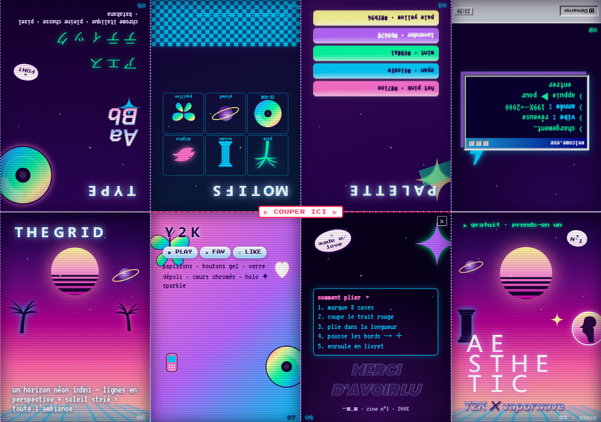

1. Clique PRINT → choisis Paysage (Landscape), A4, marges Aucune, échelle 100%, et active "Graphismes d'arrière-plan".
2. Plie la feuille en deux dans la longueur, puis encore en deux deux fois → 8 cases.
3. Déplie une fois et coupe la ligne "COUPER ICI" au milieu.
4. Pousse les bords pour former un +, puis enroule → petit livret de 8 pages. 🎉
L'image fait déjà la bonne mise en page (la rangée du haut est à l'envers, c'est normal).
